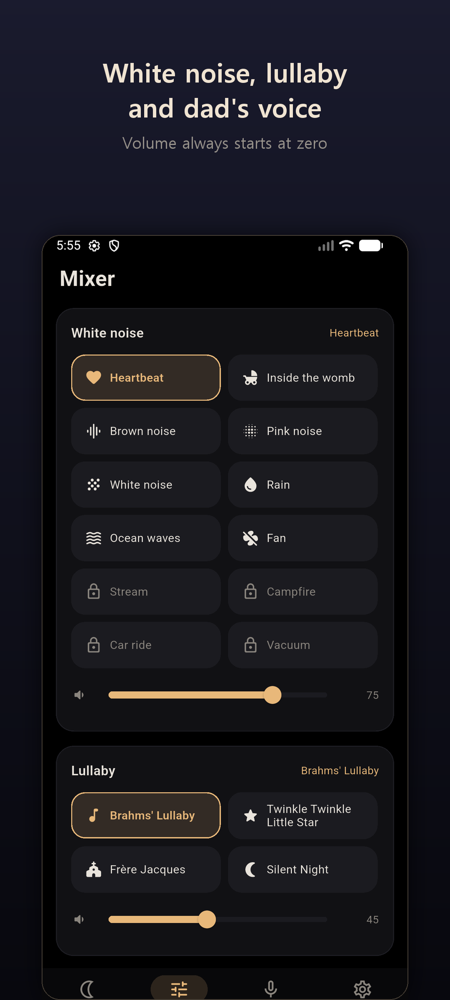
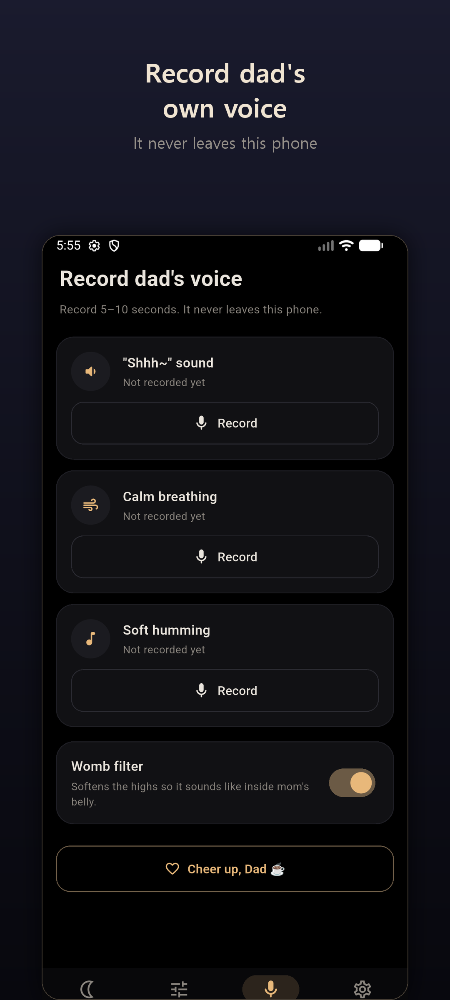
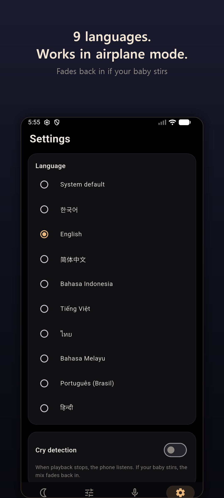

Apps / Dad's Heart
Baby sleep sounds for AndroidDad's Heart
Sleep sounds in dad's own voice. No ads while the sound is playing. Works 100% offline.
Get it on Google PlayScreenshots




The app
Dad's Heart is a baby sleep sound mixer for parents. An app used next to a sleeping baby should stay quiet, so playback is never interrupted by an ad. There is no server, no account, and no internet connection required. Every sound is synthesized on the phone. Nothing is downloaded, and lullabies use public-domain melodies only.
Dad's voice
Record five seconds of a "shhh", calm breathing, or a soft hum. The womb filter softens the high frequencies so it feels closer to the sound from inside the belly. The recording never leaves the phone.
Three layers
Blend white noise, a lullaby, and dad's voice at the same time. Each layer has its own volume. Sounds include heartbeat, womb, brown, pink, and white noise, rain, ocean, and a fan. Stream, campfire, car ride, and vacuum unlock after an optional ad.
Lullabies
Four music-box melodies: Brahms' Lullaby, Twinkle Twinkle Little Star, Frere Jacques, and Silent Night.
Volume starts at zero
Even if the phone's media volume is at maximum, the mix starts silent. Opening the app or changing a sound sets that layer back to zero.
Sleep timer
Choose 15 minutes, 30 minutes, 1 hour, or all night. The sound fades out over 8 seconds before it stops.
Cry detection
After playback stops, the phone listens only for loudness. If the baby stirs, the mix fades back in. The audio is discarded immediately. Nothing is saved or sent.
Built for 3 a.m.
The screen stays black, including the launch screen. One large play button restores the last mix.
Privacy
Recordings and settings stay on the device. The app works in airplane mode. Nine languages are included, and the interface is in English by default on English phones.
Free on Google Play. An optional "Cheer up, Dad" rewarded ad is the only ad, and it appears only when you tap it. Most of the app works without watching it. Privacy policy
Support
Questions about Dad's Heart: